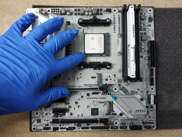

El montaje
Indice
1. Las herramientas
Antes de empezar a montar nuestro pc, vamos a necesitar una serie de herramientas con las que realizar el montaje. Para ello, hemos elaborado una pequeña lista con lo más básico para llevar a cabo esta tarea:
- Destornilladores: Lo más básico y esencial será el disponer de un juego de destornilladores. Será suficiente con uno o dos destornilladores de estrella, los cuales, en ciertas situaciones viene bien que sean largos para poder acceder a diversas zonas de forma sencilla.
- Pasta térmica: Esencial a la hora de instalar el disipador. La pasta térmica se encargará de facilitar la trasnmisión del calor entre el procesador y el disipador. Por ello, es importante que sea de buena calidad para evitar problemas.
- USB con Windows: Por último, si queremos instalar el sistema operativo será necesario disponer de un USB con Windows o alguna distribución de Linux para poder empezar a trabajar con el equipo.
2. Procesador, placa y RAM
El primer paso para montar nuestro pc será preparar la placa base para instalarla en la torre. Para ello empezaremos con el procesador, pasando tambien por la instalación de la memoria RAM.
Lo primero será sacar la placa base de su caja y apollarla en una superficie acolchada para evitar dañar sus componentes y la propia mesa o superficie que estemos utilizando.
Para instalar el procesador deberemos levantar la palanca que se encuentra al lado del socket para poder abrirlo y poder instalar la cpu sin problemas. Hay que fijarse bien en la posición de este mediante dos flechas serigrafiadas una en la placa base y otra en el procesador. Ambas deben estar alineadas y de esta forma sabremos que el procesador esta bien posicionado. Lo último será bajar la palanca para fijar definitivamente el componente.
El siguiente paso es extender la pasta térmica sobre el procesador sin pasarse y ajustar el sistema de refrigeración seleccionado junto con los brakets propios de cada plataforma. El disipador contará con un cable para el ventilador o bomba, el cual se conectará al conector CPU FAN, el más cercano al procesador.
Por último queda instalar la memoria RAM, para ello bajaremos las pestañas de los zócalos e introducimos la memoria sin hacer mucha fuerza. Estas pestañas volverán a subir ellas solas y a bloquear la RAM. Mucho ojo, si tenemos dos módulos hay que tener en cuenta el dual channel y comprobar en qué zócalos introducir los módulos.
3. La torre y la fuente
La elección de una buena caja o torre es esencial para mantener un correcto flujo de aire y poder mantener fresco nuestro pc. Lo primero de todo es retirar las tapas laterales de la torre y sacar la caja o bolsa con todos los tornillos necesarios que vienen incluida con la caja. Allí encontraremos los pernos necesarios para atornillar la placa base a la caja, aunque muchas veces estos ya vienen atornillados a la propia caja.
Pero antes de introducir la placa, conviene instalar la fuente y empezar a pasar cables para evitar problemas más adelante. Por lo general, la fuente de alimentación se instala en la parte inferior con el ventilador orientado hacia abajo. Esta se atornillará a la caja con cuatro tornillos que suelen venir incluidos con la propia fuente. Lo siguiente será pasar el cable atx de 24 pines para alimentar la placa base, el cable atx para alimentar la cpu y si es necesario los cables pci-e para alimentar a la tajeta gráfica.
Por último atornillamos la placa base a la torre fijándonos bien en los agujeros que esta tiene para posicionar los pernos en caso de tener que atornillarlos ya que existen diversos formatos de placa base. No olvidar que hay que instalar el embellecedor de los puertos traseros de la placa.
4. Tarjetas PCI y discos
El siguiente paso consiste en instalar las tarjetas pci que lleve nuestro pc junto con los discos duros o ssd. En este caso hay que tener en cuenta como instalamos estos componentes para así poder tener una mejor organización de los cables y tener un facil acceso a los discos por ejemplo sin tener cables de por medio que estorben.
4.1. Tarjetas PCI
Para instalar tarjetas pci deberemos bajar la pestaña que los bloquea e instalar los componentes, así de fácil. Hay que tener en cuenta que las tarjetas gráficas usarán por lo general el puerto pci-e x16, el cual suele ser el primero de todos, el más próximo al procesador.
4.2. Almacenamiento
Hora de instalar el almacenamiento. Para ello, la caja cuenta con una sección para instalar los discos duros, donde deberemos atornillarlos y posicionarlos de forma que sus conectores queden hacia nosotros. En algunos casos estas bahias de dsicos cuentan con bandejas que se pueden extraer facilitando enormemente la instalación, aunque también te puedes encontrar casos en los que tienes que retirar por completo la bahía.
Por otro lado nos podemos encontrar con ssd en formato M.2, los cuales van en el puerto del mismo nombre, situado normalmente entre los puertos pci y el procesador
5. Cables y ventiladores
La instalación de los ventiladores es sencilla, aunque hay que tener en cuenta la orientación de los mismos para tener un correcto flujo del aire. Para ello se comprueba su orientación y se atornillan a la caja mediante tornillos convencionales o mediante tornillos de goma para reducir vibraciones.
Ahora viene una de las partes que más trabajo lleva, conectar y organizar los cables. En primer lugar deberemos conectar los cables de alimentación principales, es decir, el atx de 24 pines (el mas grande de todos), el cable de la cpu y el pci-e para las tarjetas gráficas. Ojo, tened en cuenta que no todas las placas base y tarjetas gráficas usan el mismo numero o tamaño de cables. El siguiente paso consistirá en conectar los ventiladores a la placa base o a los conectores molex si lo tuviesen para poder alimentarlos.
A continuación conectaremos los cables de datos sata de los discos duros a la placa base y el conector de alimentación para estos. Por último deberemos conectar los cables de la porpia caja, es decir, los usb, el conector de audio y demás. Es recomendable leer el manual de la placa base para poder conectar correctamente algunos conectores como el de los leds del disco o el botón de encendido. Ahora viene quizás la tare más laboriosa, ordenar los cables para ocultarlos y reducir el espacio que ocupan y en algunos casos mejorar la estética de nuestro PC
6. Sistema operativo
Una vez tenemos nuestro PC montado y funcionado, el último paso que nos queda es instalar el sistema operativo y los drivers. En nuestro caso utilizaremos Windows 10 y para ello deberemos tener el instalador en un USB. Este instalador podemos crearlo con la herramienta de creación de medios que nos ofrece Microsoft junto con un USB de 8GB de espacio mínimo.
6.1. Windows
El primero es conectar nuestro USB al ordenador para poder instalar el sistema operativo. De primeras, el programa de instalación nos solicitara introducir una clave de producto para después darnos a elegir entre los diversos tipos de Windows 10 que queremos instalar. En caso de no tener clave haremos click en no tengo clave de producto o nos haremos con una clave en la tienda oficial de microsoft o con una clave oem en una tienda de confianza

Una vez realizado este paso y seleccionado el sistema operativo a instalar, deberemos elegir donde queremos instalarlo. Nuestra recomendación es hacer la instalación en un ssd a parte del almacenamiento principal, ganando asi fluidez en el equipo. Para ello haremos click en la unidad donde queremos instalarlo, siguiente y ya nuestra instalación de windows 10 comenzará a realizarse.
El último paso es el más sencillo y es configurar algunos aspectos de nuestro sistema operativo como el idioma, nuestra cuenta Microsoft, conectarse a una red y demás. Este proceso se realiza de forma sencilla gracias a la ayuda que nos aporta el propio sistema.
6.2. Drivers
Por último, solo queda instalar los drivers para que el PC funcione correctamente y podamos empezas a trabajar con él. Para ello deberemos irnos a las páginas de los fabricantes de los componentes como Nvidia, AMD, Intel, Gigabyte, Msi... etc. Allí encontrarás los drivers necesarios junto con algunos programas útiles que nos suelen ofrecer los fabricantes de placas bases para controlar los ventiladores, la iluminación, hacer overclock, actualizar la bios... Con esto, nuestro PC estaría preparado para trabajar y ya solo quedaría instalar todo aquello que nosotros usemos en el día a día.